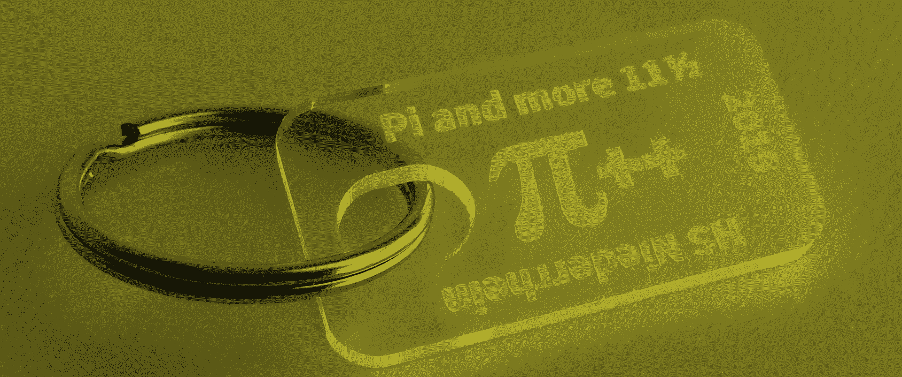

Pi And More 11½

Anhänger aus dem Lasergravierer
In diesem Jahr lockte die Pi And More 11½ Interessierte, Bastler, Hacker, Programmierer und Freigeister nach Krefeld in die Hochschule am Niederrhein. Es gab ein buntes Veranstaltungsprogramm garniert mit Vorträgen, Workshops und einer Ausstellung. Die Veranstaltung findet regelmäßig an immer wieder unterschiedlichen Orten statt.
Ausgangspunkt ist …
more ...